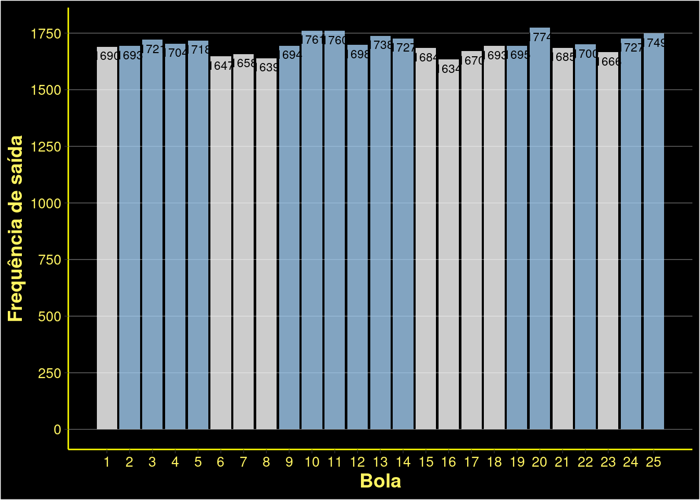

library(dplyr)
library(ggplot2)
library(janitor)
library(readr)
library(tidyr)A história da Lotofácil
A Lotofácil é uma das loterias mais populares do Brasil, sendo introduzida em 2003 pela Caixa Econômica Federal. Ela foi criada com o objetivo de oferecer aos jogadores uma modalidade mais acessível e com maiores chances de ganhar.
Apresentação da Lotofácil como uma das principais loterias do Brasil.
Breve visão geral dos tópicos a serem abordados.
Pacotes
Carregando os dados
lotofacil <- read_csv("/home/ricardo/Documents/git/blogR/posts/008-lotofacil/lotofacil.csv") |>
clean_names()
head(lotofacil)# A tibble: 6 × 17
concurso data bola_1 bola_2 bola_3 bola_4 bola_5 bola_6 bola_7 bola_8 bola_9
<dbl> <chr> <dbl> <dbl> <dbl> <dbl> <dbl> <dbl> <dbl> <dbl> <dbl>
1 2835 12/06… 9 14 2 12 25 6 22 8 21
2 2834 10/06… 8 11 25 22 17 10 19 6 14
3 2833 09/06… 6 5 14 4 18 23 16 22 24
4 2832 07/06… 23 2 1 11 15 24 14 21 16
5 2831 06/06… 7 25 5 17 15 3 14 11 10
6 2830 05/06… 17 3 12 18 11 25 2 21 8
# ℹ 6 more variables: bola_10 <dbl>, bola_11 <dbl>, bola_12 <dbl>,
# bola_13 <dbl>, bola_14 <dbl>, bola_15 <dbl>lf_long <- lotofacil |>
pivot_longer(cols = c(bola_1:bola_15), names_to = "ordem", values_to = "bola")todos <- lf_long |>
group_by(bola) |>
tally()
ggplot(data = todos, aes(x = bola, y = n)) +
geom_col(position = position_dodge2(),
fill = ifelse(todos$bola %in% head(order(desc(todos$n)), 15),"#A2CDF1", "white"),
alpha = 0.8) +
scale_x_continuous(breaks = 1:25) +
scale_y_continuous(breaks = seq(0, 1750, 250)) +
geom_text(aes(y = n, label = n), vjust = 1.5, size = 3) +
labs(x = "Bola",
y = "Frequência de saída") +
theme_dark() +
theme(panel.background = element_rect(fill = "black"),
plot.background = element_rect(fill = "black"),
axis.title = element_text(color = "#FFF461", face = "bold", size = 14),
axis.text = element_text(color = "#FFF461", size = 10),
axis.line = element_line(color = "yellow"),
panel.grid.minor = element_blank(),
panel.grid.major.x = element_blank())
themeB <- function() {
theme(panel.background = element_rect(fill = "black"),
plot.background = element_rect(fill = "black"),
axis.title = element_text(color = "#FFF461", face = "bold", size = 14),
axis.text = element_text(color = "#FFF461", size = 10),
axis.line = element_line(color = "yellow"),
panel.grid.minor = element_blank(),
panel.grid.major.x = element_blank())
}
bolas <- lf_long |>
group_by(ordem, bola) |>
tally()
ggplot(data = bolas, aes(x = ordem, y = n, group = bola)) +
geom_col(position = position_dodge2(),
fill = "#A2CDF1",
alpha = 0.8) +
themeB() +
facet_wrap(~bola)bolas |>
group_by(bola, ordem) |>
summarise(max(n)) |> View()Falar da teoria da probabilidade de numeros grandes - distribuição uniforme